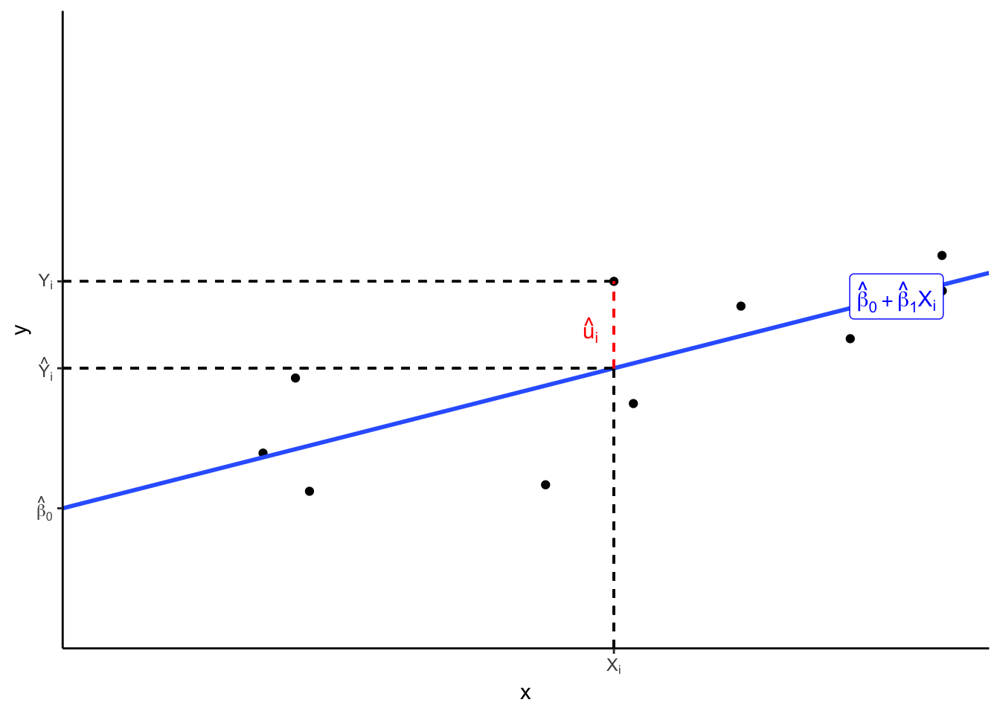
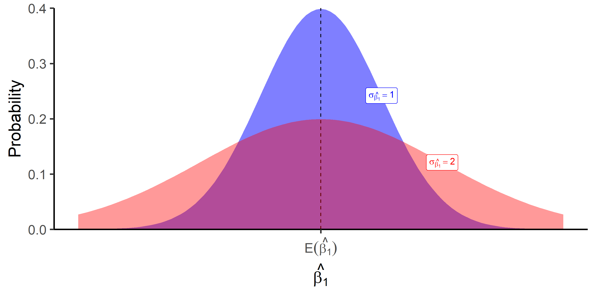

Midterm Concepts
OLS Regression
Bivariate data and associations between variables (e.g. \(X\) and \(Y\))
Apparent relationships are best viewed by looking at a scatterplot
Check for associations to be positive/negative, weak/strong, linear/nonlinear, etc
\(Y\): dependent variable
\(X\): independent variable
Correlation coefficient (\(r\)) can quantify the strength of an association
\[ r_{X,Y}=\frac{1}{n-1} \sum^n \bigg(\frac{X_i-\bar{X}}{s_X}\bigg) \bigg(\frac{Y_i-\bar{Y}}{s_Y}\bigg) = \frac{\displaystyle \sum^n Z_X Z_Y}{n-1} \]
\(-1 \leq r \leq 1\) and \(r\) only measures linear associations
\(|r|\) closer to 1 imply stronger correlation (near a perfect straight line)
Correlation does not imply causation! Might be confounding or lurking variables (e.g.$Z$) affecting \(X\) and/or \(Y\)
Population regression model
\[ Y_i=\beta_0+\beta_1X_i+u_i \]
\(\beta_1\): \(\frac{\Delta Y}{\Delta X}\): the slope between $X$ and $Y$, number of units of \(Y\) from a 1 unit change in \(X\)
\(\beta_0\) is the \(Y\)-intercept: literally, value of \(Y\) when \(X=0\)
\(u_i\) is the error, difference between actual value of \(Y|X\) vs. predicted value of \(\hat{Y}\)
Ordinary Least Squares (OLS) regression model
\[ Y_i = \hat{\beta}_0+\hat{\beta}_1 X_i + u_i \]
\[ \hat{Y_i}=\hat{\beta_0}+\hat{\beta_1}X_i \]
\[ \hat{u}_i = Y_i-\hat{Y}_i \]
OLS estimators \(\hat{\beta_0}\) and \(\hat{\beta_1}\) estimate population regression line from sample data
Minimize sum of squared errors (SSR) \(min\displaystyle \sum^n \hat{u}_i^2\)
OLS regression line
\[ \hat{\beta_1} = \frac{cov(X,Y)}{var(X)}=\frac{\sum (X_i-\bar{X})(Y_i-\bar{Y})}{\sum (X_i-\bar{X})^2}=r_{X,Y}\frac{s_Y}{s_X} \]
\[ \hat{\beta_0} = \bar{Y}-\hat{\beta_1}\bar{X} \]
Measures of Fit
- \(R^2\): fraction of total variation on \(Y\) explained by variation in \(X\) according to model
\[ \begin{align*} R^2 & = \frac{SSM}{SST} \\ R^2 & = 1 - \frac{SSR}{SST} \\ R^2 & = r_{X,Y}^2 \\ \end{align*} \]
Where
\(SSM = \sum (\hat{Y}_i - \bar{Y}_i)^2\)
\(SST = \sum(Y_i - \bar{Y}_i)^2\)
\(SSR = \sum u_i^2\)
Standard error of the regression (or residuals), SER: average size of \(\hat{u}_i\), i.e. average distance between points and the regression line
\[ SER \, (\sigma_{\hat{u}_i})= \frac{SSR}{n-2} = \frac{\sum \hat{u_i}^2}{n-2} \]
Sampling Distribution of \(\hat{\beta}_1\)

\(\hat{\beta_1}\) is a random variable, so it has its own sampling distribution with mean \(\mathbb{E}[\hat{\beta_1}]\) and standard error \(se[\hat{\beta_1}]\)
Mean of OLS estimator \(\hat{\beta_1}\) & Bias: Endogeneity & Exogeneity
\(X\) is exogenous if it is not correlated with the error term
\[ \begin{align*} cor(X,u) &=0 \\ \mathbb{E}[u|X] &=0 \\ \end{align*} \]
equivalently, knowing \(X\) should tell us nothing about \(u\) (zero conditional mean assumption)
if \(X\) is exogenous, OLS estimate of \(\beta_1\) is unbiased
\[ E[\hat{\beta}_1]=\beta_1 \]
\(X\) is endogenous if it is correlated with the error term
\[ cor(X,u) \neq 0 \]
If \(X\) is endogenous, OLS estimate of \(\beta_1\) is biased:
\[ \mathbb{E}[\hat{\beta}_1] = \beta_1 + \underbrace{cor(X,u)\frac{\sigma_u}{\sigma_X}}_{bias} \]
Can measure strength and direction (+ or -) of bias
Note if unbiased, \(cor(X,u)=0\), so \(E[\hat{\beta_1}]=\beta_1\)
Assumptions about u
The mean of the errors is 0
\[ \mathbb{E}[u_i] = 0 \]
The variance of the errors is constant over all values of \(X\) (homoskedasticity)
\[ var[u_i|X_i]=\sigma_u^2 \]
Errors are not correlated across observations \(i\) and \(j\) (no autocorrelation)
\[ cor(u_i,u_j) = 0 \]
There is no correlation between \(X\) and \(u\), i.e. the model is exogenous
\[ \begin{align*} cor(X,u) &=0 \\ \mathbb{E}[u|X] &=0 \\ \end{align*} \]
Precision of OLS estimator \(\hat{\beta}_1\) measures uncertainty/variability of estimate
\[ \begin{align*} var[\hat{\beta}_1]&=\frac{SER^2}{n\times var(X)}\\ se[\hat{\beta}_1]&=\sqrt{var[\hat{\beta}_1]} \\ \end{align*} \]
Affected by three factors:
Model fit, (SER)
Sample size, \(n\)
Variation in \(X\)
Heteroskedasticity & Homoskedasticity
Homoskedastic errors (\(\hat{u}_i\)) have the same variance over all values of \(X\)
Heteroskedastic errors (\(\hat{u}_i\)) have different variance over values of \(X\)
Heteroskedasticity does not bias our estimates, but incorrectly lowers variance & standard errors (inflating $t$-statistics and significance!)
Can correct for heteroskedasticity by using robust standard errors
Hypothesis Testing of \(\beta_1\)
\(H_0: \beta_1=\beta_{1,0}\), often \(H_0: \beta_1=0\)
Two sided alternative \(H_1: \beta_1 \neq 0\)
One sided alternatives \(H_1: \beta_1 > 0\) or \(H_2: \beta_1 < 0\)
\(t\)-statistic
\[ t=\frac{\hat{\beta_1}-\beta_{1,0}}{se(\hat{\beta_1})} \]
Compare \(t\) against critical value \(t\)*, or compute \(p\)-value as usual
Confidence intervals (95%): \(\hat{\beta_1} \pm 1.96 \left(se(\hat{\beta_1})\right)\)